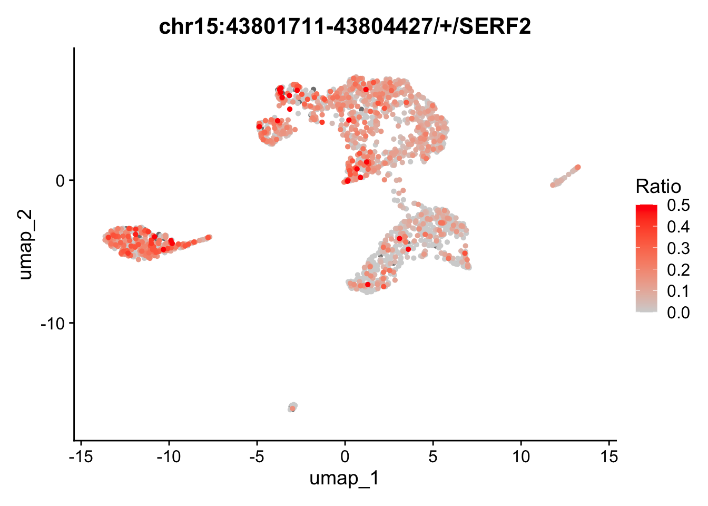

require(Yano)Loading required package: Yano── Attaching packages ────────────────────────────────────────────── Yano 1.0 ──
✔ dplyr 1.1.4 ✔ Seurat 5.1.0
✔ ggplot2 3.5.1 This vignette uses gene, exon, and junction expression files generated from the Annotate Various Features for Alignment. While current state-of-the-art scRNA-seq methods tend to be biased towards the 3’ or 5’ ends of transcripts, it is still possible to obtain coverage information for a subset of exons. Despite the sparsity of gene and exon expression in single cells, our spatial dissimilarity test leverages the spatial distribution properties of features. This means that even features with low overall expression but strong spatial expression patterns across cells can still be highlighted. By performing a spatial dissimilarity test between exon/junction and gene expression, we can predict potential alternative splicing events.
Yano package before proceeding with the testing.Load Yano will automatically load Seurat.
require(Yano)Loading required package: Yano── Attaching packages ────────────────────────────────────────────── Yano 1.0 ──
✔ dplyr 1.1.4 ✔ Seurat 5.1.0
✔ ggplot2 3.5.1 # Read raw gene expression matrix
exp <- ReadPISA("./exp/")
dim(exp)[1] 37178 967922In this section, we will perform the standard Seurat analysis pipeline. Since the spatial dissimilarity test is not rely on cell clustering so changing the resolution or other parameters for FindClusters and RunUMAP will not impact the outcome of the spatial dissimilarity test.
# Create Seurat object and filter droplets with fewer than 1000 genes
obj <- CreateSeuratObject(exp, min.features = 1000, min.cells = 10)
# Filter low quality droplets
obj[["percent.mt"]] <- PercentageFeatureSet(obj, pattern = "^MT-")
obj <- subset(obj, nFeature_RNA < 9000 & percent.mt < 20)
# Downsampling to 2000 cells for fast testing
obj <- obj[, sample(colnames(obj),2000)]
# In the cell clustering analysis, we regress the scaled data by counts, which is especially important for large-scale datasets. Without this adjustment, the distribution of cells in PCA space may be biased by total counts, potentially labeling features that are influenced by counts rather than biological variation.
obj <- NormalizeData(obj) %>% FindVariableFeatures() %>% ScaleData(vars.to.regress = "nCount_RNA") %>% RunPCA(verbose=FALSE) %>% FindNeighbors(dims = 1:10, verbose=FALSE) %>% FindClusters(resolution = 0.5, verbose=FALSE) %>% RunUMAP(dims=1:10, verbose=FALSE)Normalizing layer: countsFinding variable features for layer countsRegressing out nCount_RNACentering and scaling data matrixDimPlot(obj, label=TRUE, label.size = 5, label.box = TRUE)
In this section, we will compare exon expression patterns with the expression patterns of their corresponding genes in a spatial context. Here, the term “spatial” refers to the organization of cells in space. In this vignette, we will use the PCA space for the analysis, but the approach can also be applied to lineage trajectories, spatial coordinates or integration space such as harmony. The spatial dissimilarity test is divided into several steps. First, we will load exon data as a new assay in the Seurat object. In the second step, we will perform a spatial autocorrelation test for all exons and select the ones that show significant autocorrelation for further analysis. Next, we will define the binding relationship between exons and their corresponding genes and run the spatial dissimilarity test. After testing, p-values and adjusted p-values for each exon will be provided.
# Read exon count matrix file
exon <- ReadPISA("./exon/")
# Load the exon expression to Seurat object as a new assay, make sure the exon matrix has the same cells.
obj[['exon']] <- CreateAssayObject(exon[, colnames(obj)], min.cells=20)
# Switch work assay to exon
DefaultAssay(obj) <- "exon"
# Empty info for exon features
head(obj[['exon']][[]]) %>% knitr::kable()| chr1:135141-135895/-/ENSG00000268903 |
| chr1:629640-630683/+/MTND2P28 |
| chr1:631074-632616/+/MTCO1P12 |
| chr1:632757-633438/+/MTCO2P12 |
| chr1:633696-634376/+/MTATP6P1 |
| chr1:634376-634922/+/MTCO3P12 |
obj <- ParseExonName(obj)Working on assay exon# Gene name and location are parsed from exon name
head(obj[['exon']][[]]) %>% knitr::kable()| chr | start | end | gene_name | strand | |
|---|---|---|---|---|---|
| chr1:135141-135895/-/ENSG00000268903 | chr1 | 135141 | 135895 | ENSG00000268903 | - |
| chr1:629640-630683/+/MTND2P28 | chr1 | 629640 | 630683 | MTND2P28 | + |
| chr1:631074-632616/+/MTCO1P12 | chr1 | 631074 | 632616 | MTCO1P12 | + |
| chr1:632757-633438/+/MTCO2P12 | chr1 | 632757 | 633438 | MTCO2P12 | + |
| chr1:633696-634376/+/MTATP6P1 | chr1 | 633696 | 634376 | MTATP6P1 | + |
| chr1:634376-634922/+/MTCO3P12 | chr1 | 634376 | 634922 | MTCO3P12 | + |
# Normalize the data for spatial autocorrelation test
obj <- NormalizeData(obj)
obj <- RunAutoCorr(obj)Working on assay : exonRun autocorrelation test for 117623 features.Runtime : 19.25507 secs# Select autocorrleated features for downstream test.
obj <- SetAutoCorrFeatures(obj)72256 autocorrelated features.# IMPORTANT
# The permutation process can be computationally expensive. In the example below, I set perm=20 to perform only 20 permutations for quicker results. However, the default setting runs 100 permutations for more accurate evaluation. While it's possible to increase the number of permutations for even more precision, it may not always be necessary. If you're running Yano for the first time on your dataset, setting perm=20 can help you save time and provide an initial overview of the entire dataset.
obj <- RunBlockCorr(obj, bind.name = "gene_name", bind.assay = "RNA", perm=20)Working on assay exon.Working on binding assay RNA.Processing 72256 features.Processing 14964 blocks.Retrieve binding data from assay RNA.Using 15 threads.Using method "D" with mode 1.Use predefined weight matrix "pca_wm".Runtime : 3.240055 mins.# Now p values and adjusted p values have been generated
head(obj[['exon']][[]]) %>% knitr::kable()| chr | start | end | gene_name | strand | moransi.pval | moransi | autocorr.variable | gene_name.D | gene_name.r | gene_name.pval | gene_name.mean | gene_name.var | gene_name.padj | |
|---|---|---|---|---|---|---|---|---|---|---|---|---|---|---|
| chr1:135141-135895/-/ENSG00000268903 | chr1 | 135141 | 135895 | ENSG00000268903 | - | 0.0000000 | 0.0260886 | TRUE | 0 | 1 | 0.9999999 | 0.1326560 | 0.0171050 | 1 |
| chr1:629640-630683/+/MTND2P28 | chr1 | 629640 | 630683 | MTND2P28 | + | 0.0000000 | 0.0215231 | TRUE | 0 | 1 | 0.9999958 | 0.1349997 | 0.0223743 | 1 |
| chr1:631074-632616/+/MTCO1P12 | chr1 | 631074 | 632616 | MTCO1P12 | + | 0.4218844 | 0.0002987 | FALSE | NA | NA | NA | NA | NA | NA |
| chr1:632757-633438/+/MTCO2P12 | chr1 | 632757 | 633438 | MTCO2P12 | + | 0.8239453 | -0.0042169 | FALSE | NA | NA | NA | NA | NA | NA |
| chr1:633696-634376/+/MTATP6P1 | chr1 | 633696 | 634376 | MTATP6P1 | + | 0.0000000 | 0.3328391 | TRUE | 0 | 1 | 0.9999997 | 0.1310495 | 0.0177325 | 1 |
| chr1:634376-634922/+/MTCO3P12 | chr1 | 634376 | 634922 | MTCO3P12 | + | 0.2959913 | 0.0016368 | FALSE | NA | NA | NA | NA | NA | NA |
# Plot feature binding test plot
FbtPlot(obj, val = "gene_name.padj")
# The chromosome names are too long and tend to overlap in the visualization. To resolve this, you can either resize the labels or remove the 'chr' prefix from the chromosome names. Additionally, since the Y chromosome and mitochondrial are not of particular interest to us in this analysis, they can be excluded from the visualization.
sel.chrs <- c(1:21, "X")
FbtPlot(obj, val = "gene_name.padj", remove.chr = TRUE, sel.chrs = sel.chrs)
# Let's see how many exons are expressed in different spatial pattern with their genes
obj[['exon']][[]] %>% filter(gene_name.padj < 0.001) %>% knitr::kable() | chr | start | end | gene_name | strand | moransi.pval | moransi | autocorr.variable | gene_name.D | gene_name.r | gene_name.pval | gene_name.mean | gene_name.var | gene_name.padj | |
|---|---|---|---|---|---|---|---|---|---|---|---|---|---|---|
| chr1:66247460-66247654/+/PDE4B | chr1 | 66247460 | 66247654 | PDE4B | + | 0e+00 | 0.0546912 | TRUE | 0.2521803 | 0.0442450 | 1e-07 | 0.1296487 | 0.0157891 | 0.0002789 |
| chr1:154169305-154169383/-/TPM3 | chr1 | 154169305 | 154169383 | TPM3 | - | 0e+00 | 0.1028637 | TRUE | 0.3163640 | 0.0876858 | 2e-07 | 0.1326710 | 0.0239742 | 0.0003173 |
| chr10:71760482-71760924/-/VSIR | chr10 | 71760482 | 71760924 | VSIR | - | 0e+00 | 0.0791329 | TRUE | 0.3172203 | -0.0267533 | 1e-07 | 0.1272933 | 0.0242106 | 0.0002451 |
| chr11:35197162-35197793/+/CD44 | chr11 | 35197162 | 35197793 | CD44 | + | 0e+00 | 0.3209872 | TRUE | 0.3034312 | 0.4555467 | 0e+00 | 0.1312166 | 0.0197699 | 0.0000576 |
| chr11:75421727-75422280/+/RPS3 | chr11 | 75421727 | 75422280 | RPS3 | + | 0e+00 | 0.0384226 | TRUE | 0.2929609 | -0.2637630 | 1e-07 | 0.1322595 | 0.0207516 | 0.0002795 |
| chr11:113262846-113265197/+/NCAM1 | chr11 | 113262846 | 113265197 | NCAM1 | + | 0e+00 | 0.3844994 | TRUE | 0.2756713 | 0.5578922 | 0e+00 | 0.1268182 | 0.0169346 | 0.0000520 |
| chr11:123061588-123061833/-/HSPA8 | chr11 | 123061588 | 123061833 | HSPA8 | - | 0e+00 | 0.1188512 | TRUE | 0.3235792 | 0.1112976 | 0e+00 | 0.1349564 | 0.0193961 | 0.0000135 |
| chr12:6943817-6944173/+/C12orf57 | chr12 | 6943817 | 6944173 | C12orf57 | + | 0e+00 | 0.0834297 | TRUE | 0.2981250 | 0.0006929 | 1e-07 | 0.1323437 | 0.0204715 | 0.0001629 |
| chr12:56161387-56161465/+/MYL6 | chr12 | 56161387 | 56161465 | MYL6 | + | 0e+00 | 0.2572222 | TRUE | 0.6510128 | -0.2902734 | 0e+00 | 0.1304956 | 0.0246133 | 0.0000000 |
| chr15:60382342-60384827/-/ANXA2 | chr15 | 60382342 | 60384827 | ANXA2 | - | 0e+00 | 0.0454057 | TRUE | 0.2627334 | -0.0410011 | 0e+00 | 0.1131764 | 0.0156976 | 0.0000179 |
| chr15:60395645-60396427/-/ANXA2 | chr15 | 60395645 | 60396427 | ANXA2 | - | 0e+00 | 0.1875689 | TRUE | 0.3804132 | 0.1077544 | 0e+00 | 0.1336548 | 0.0241705 | 0.0000072 |
| chr15:60395907-60396427/-/ANXA2 | chr15 | 60395907 | 60396427 | ANXA2 | - | 0e+00 | 0.1803375 | TRUE | 0.3770761 | 0.1073890 | 0e+00 | 0.1298831 | 0.0265445 | 0.0000246 |
| chr15:43801711-43804427/+/SERF2 | chr15 | 43801711 | 43804427 | SERF2 | + | 0e+00 | 0.0939534 | TRUE | 0.3587817 | -0.0824881 | 0e+00 | 0.1301253 | 0.0185195 | 0.0000004 |
| chr15:43801132-43801187/+/SERF2 | chr15 | 43801132 | 43801187 | SERF2 | + | 0e+00 | 0.0942520 | TRUE | 0.3102141 | 0.0442776 | 0e+00 | 0.1251415 | 0.0208373 | 0.0000459 |
| chr15:43801518-43801569/+/SERF2 | chr15 | 43801518 | 43801569 | SERF2 | + | 0e+00 | 0.0843982 | TRUE | 0.2929838 | 0.0425922 | 0e+00 | 0.1266275 | 0.0193227 | 0.0000667 |
| chr17:31305213-31305630/-/ENSG00000265118 | chr17 | 31305213 | 31305630 | ENSG00000265118 | - | 0e+00 | 0.0920634 | TRUE | 0.2882058 | 0.1148479 | 1e-07 | 0.1261358 | 0.0206368 | 0.0002451 |
| chr18:49481681-49482410/-/RPL17-C18orf32 | chr18 | 49481681 | 49482410 | RPL17-C18orf32 | - | 0e+00 | 0.2742176 | TRUE | 0.7545718 | -0.4268749 | 0e+00 | 0.1310111 | 0.0181007 | 0.0000000 |
| chr19:16095264-16095357/+/TPM4 | chr19 | 16095264 | 16095357 | TPM4 | + | 0e+00 | 0.1546845 | TRUE | 0.4897143 | -0.2374694 | 0e+00 | 0.1264765 | 0.0224529 | 0.0000000 |
| chr19:16095264-16095893/+/TPM4 | chr19 | 16095264 | 16095893 | TPM4 | + | 0e+00 | 0.2312377 | TRUE | 0.5804058 | -0.2019089 | 0e+00 | 0.1304144 | 0.0214677 | 0.0000000 |
| chr19:16095264-16095591/+/TPM4 | chr19 | 16095264 | 16095591 | TPM4 | + | 0e+00 | 0.2325371 | TRUE | 0.5815461 | -0.2009467 | 0e+00 | 0.1304713 | 0.0214832 | 0.0000000 |
| chr19:16095264-16095454/+/TPM4 | chr19 | 16095264 | 16095454 | TPM4 | + | 0e+00 | 0.2250432 | TRUE | 0.5837551 | -0.2210816 | 0e+00 | 0.1274471 | 0.0184659 | 0.0000000 |
| chr19:16095264-16096744/+/TPM4 | chr19 | 16095264 | 16096744 | TPM4 | + | 0e+00 | 0.2290083 | TRUE | 0.5771710 | -0.2008056 | 0e+00 | 0.1297432 | 0.0218414 | 0.0000000 |
| chr19:16095264-16095496/+/TPM4 | chr19 | 16095264 | 16095496 | TPM4 | + | 0e+00 | 0.2401335 | TRUE | 0.6015912 | -0.2224046 | 0e+00 | 0.1291338 | 0.0216016 | 0.0000000 |
| chr19:18169087-18170494/+/ENSG00000268173 | chr19 | 18169087 | 18170494 | ENSG00000268173 | + | 0e+00 | 0.0588381 | TRUE | 0.4531161 | -0.6978941 | 0e+00 | 0.1337180 | 0.0205640 | 0.0000000 |
| chr2:218344808-218346756/+/PNKD | chr2 | 218344808 | 218346756 | PNKD | + | 0e+00 | 0.0978251 | TRUE | 0.4958340 | -0.4588755 | 0e+00 | 0.1358022 | 0.0230888 | 0.0000000 |
| chr2:218344808-218346784/+/PNKD | chr2 | 218344808 | 218346784 | PNKD | + | 0e+00 | 0.0984377 | TRUE | 0.4956118 | -0.4566855 | 0e+00 | 0.1358245 | 0.0229064 | 0.0000000 |
| chr2:218344808-218346793/+/PNKD | chr2 | 218344808 | 218346793 | PNKD | + | 0e+00 | 0.1008913 | TRUE | 0.4971143 | -0.4443276 | 0e+00 | 0.1341111 | 0.0215018 | 0.0000000 |
| chr2:218344808-218346791/+/PNKD | chr2 | 218344808 | 218346791 | PNKD | + | 0e+00 | 0.1008913 | TRUE | 0.4971143 | -0.4443276 | 0e+00 | 0.1341111 | 0.0215018 | 0.0000000 |
| chr2:218344808-218346771/+/PNKD | chr2 | 218344808 | 218346771 | PNKD | + | 0e+00 | 0.0976656 | TRUE | 0.4951175 | -0.4577711 | 0e+00 | 0.1359252 | 0.0231094 | 0.0000000 |
| chr20:37238402-37238449/+/RPN2 | chr20 | 37238402 | 37238449 | RPN2 | + | 0e+00 | 0.0386639 | TRUE | 0.3143769 | -0.3330383 | 0e+00 | 0.1253261 | 0.0211403 | 0.0000429 |
| chr3:181175514-181176513/+/SOX2-OT | chr3 | 181175514 | 181176513 | SOX2-OT | + | 0e+00 | 0.2452798 | TRUE | 0.4279637 | 0.1402529 | 0e+00 | 0.1294827 | 0.0259017 | 0.0000010 |
| chr3:181175514-181176523/+/SOX2-OT | chr3 | 181175514 | 181176523 | SOX2-OT | + | 0e+00 | 0.2452798 | TRUE | 0.4279637 | 0.1402529 | 0e+00 | 0.1294827 | 0.0259017 | 0.0000010 |
| chr3:181175514-181176524/+/SOX2-OT | chr3 | 181175514 | 181176524 | SOX2-OT | + | 0e+00 | 0.2521820 | TRUE | 0.4341266 | 0.1387279 | 0e+00 | 0.1293411 | 0.0255440 | 0.0000006 |
| chr5:179812407-179813024/+/SQSTM1 | chr5 | 179812407 | 179813024 | SQSTM1 | + | 5e-07 | 0.0193018 | TRUE | 0.3138433 | -0.4873991 | 0e+00 | 0.1343151 | 0.0199617 | 0.0000408 |
| chr5:179812407-179813598/+/SQSTM1 | chr5 | 179812407 | 179813598 | SQSTM1 | + | 0e+00 | 0.0227400 | TRUE | 0.3203367 | -0.5190151 | 0e+00 | 0.1331069 | 0.0190491 | 0.0000125 |
| chr5:179811988-179813641/+/SQSTM1 | chr5 | 179811988 | 179813641 | SQSTM1 | + | 0e+00 | 0.0227412 | TRUE | 0.3205962 | -0.5219374 | 0e+00 | 0.1331148 | 0.0191646 | 0.0000129 |
| chr8:60620674-60620988/+/RAB2A | chr8 | 60620674 | 60620988 | RAB2A | + | 0e+00 | 0.0379721 | TRUE | 0.3148872 | -0.3931804 | 2e-07 | 0.1403710 | 0.0231654 | 0.0003948 |
| chr8:60620674-60620948/+/RAB2A | chr8 | 60620674 | 60620948 | RAB2A | + | 0e+00 | 0.0394152 | TRUE | 0.3129958 | -0.3749299 | 3e-07 | 0.1401649 | 0.0233608 | 0.0004988 |
| chr8:60620674-60620941/+/RAB2A | chr8 | 60620674 | 60620941 | RAB2A | + | 0e+00 | 0.0382238 | TRUE | 0.3115465 | -0.3843719 | 4e-07 | 0.1394200 | 0.0241058 | 0.0008045 |
| chr8:60620674-60620938/+/RAB2A | chr8 | 60620674 | 60620938 | RAB2A | + | 0e+00 | 0.0383230 | TRUE | 0.3123754 | -0.3856379 | 4e-07 | 0.1394138 | 0.0242683 | 0.0008054 |
# Random select a gene and its exons and visulize with FeaturePlot.
FeaturePlot(obj, features = c("chr15:43801711-43804427/+/SERF2", "SERF2"), ncol=2)
# The default color and parameters perhaps not easily to tell the difference between exon and its binding gene expression. Let's change the scaled colors and enlarge point size and order by expression.
require(RColorBrewer)Loading required package: RColorBrewerFeaturePlot(obj, features = c("chr15:43801711-43804427/+/SERF2", "SERF2"), ncol=2, order = TRUE, pt.size=1) & scale_colour_gradientn(colours = rev(brewer.pal(n = 11, name = "RdBu")))Scale for colour is already present.
Adding another scale for colour, which will replace the existing scale.Scale for colour is already present.
Adding another scale for colour, which will replace the existing scale.
In the feature plot above, the exon appears to lack an expression pattern across cell groups, whereas the gene SERF2 seems to be highly expressed in many groups, except for groups 2 and 8. This inconsistent expression pattern between the exon and its corresponding gene may suggest differential exon usage. To explore the coverage details of both the exon and the gene body, we will generate a track plot next.
In our package, retrieving gene locations requires loading a GTF file instead of relying on current Bioconductor databases, such as org.Hs.eg.db. This is due to the varying versions of gene annotations provided by different institutes, which can introduce inconsistencies. To avoid potential bias during preprocessing and postprocessing, we strongly recommend using the same GTF file consistently throughout your project. The Yano package includes the gtf2db function, which enables you to load a GTF file into memory for further analysis.
gtf <- gtf2db("./gencode.v44.annotation.gtf.gz")[2024-10-21 13:12:57] [32mGTF loading..[0m
[2024-10-21 13:13:30] [32mLoad 62700 genes.[0m
[2024-10-21 13:13:30] [32mLoad time : 32.482 sec[0mA track plot is used to study the read coverage per cell group. In the track plot shown below, the cell group is specified by the cell.group parameter. Unlike IGV, where read depth is used, we use UMI depth in this plot. The cell barcode tag and UMI tag are predefined as “CB” and “UB” with parameter cell.tag and umi.tag. For each cell group, the UMI depth has been normalized by the number of cells in that group. This means that the depth at each location can be interpreted as the mean UMI depth per cell for the group. As a result, the tracks are directly comparable across different cell groups. If cell.group is not set, the track plot will generate the raw UMI depth per location.
TrackPlot(bamfile = "Parent_SC3v3_Human_Glioblastoma_possorted_genome_bam.bam", gtf = gtf, gene = "SERF2", cell.group = Idents(obj), highlights = c(43801711,43804427) )
In the track plot, we can easily observe that an exon around position 33,794,000 dominates the expression of the SERF2 gene and is highly expressed in many cell groups. However, the exon ‘chr15:43801711-43804427/+/SERF2’ (highlighted) shows low expression and is not visible in the track plot. To visualize low-expressed exons, we can set the max.depth parameter to 2, which caps the UMI depth at 2. And many genes in the region, we set display.genes to SERF2 only. This adjustment allows the low-expressed exons and their related transcipts to be more clearly represented in the plot. In this case, we can found the the highlighed exon shows different expressed pattern with the gene SERF2.
TrackPlot(bamfile = "Parent_SC3v3_Human_Glioblastoma_possorted_genome_bam.bam", gtf = gtf, gene = "SERF2", cell.group = Idents(obj), highlights = c(43801711,43804427), max.depth = 2, display.genes = "SERF2")
In addition to exon expression, junction expression can provide insights into different expression patterns across transcripts, offering a complementary perspective. Junction expression refers to the UMI counts of reads that span more than one exon. It’s important to note that junctions are named similarly to exons, but the start and end positions are different. The start of the junction corresponds to the end of the previous exon, while the end of the junction represents the start of the next exon.
junction <- ReadPISA("./junction/")
obj[['junction']] <- CreateAssayObject(junction[, colnames(obj)], min.cells=20)
DefaultAssay(obj) <- "junction"
obj <- NormalizeData(obj)
# select spatial autocorrelated junctions
obj <- RunAutoCorr(obj)Working on assay : junctionRun autocorrelation test for 15069 features.Runtime : 2.782442 secsobj <- SetAutoCorrFeatures(obj)7869 autocorrelated features.# Parse the gene name and coordinates from junction names
obj <- ParseExonName(obj)Working on assay junction# perform dissimilarity test between junctions and their binding genes
obj <- RunBlockCorr(obj, bind.name = "gene_name", bind.assay = "RNA", perm=20)Working on assay junction.Working on binding assay RNA.Processing 7869 features.Processing 3900 blocks.Retrieve binding data from assay RNA.Using 15 threads.Using method "D" with mode 1.Use predefined weight matrix "pca_wm".Runtime : 21.23339 secs.FbtPlot(obj, val="gene_name.padj", remove.chr=TRUE, sel.chrs = sel.chrs)
# Because both exon and junction are compared with gene, so it's reasonable to combine these two assays in one plot
FbtPlot(obj, val="gene_name.padj", assay = c("exon", "junction"), col.by = "assay", shape.by = "assay", pt.size = 2, remove.chr = TRUE, sel.chrs = sel.chrs, cols = c("red", "blue"))
# We can find there is an exon and a junction at chromosome 12 with very low p value (<1e-8), let's see which gene they are located
obj[['exon']][[]] %>% filter(chr == "chr12" & gene_name.pval < 1e-8) %>% knitr::kable()| chr | start | end | gene_name | strand | moransi.pval | moransi | autocorr.variable | gene_name.D | gene_name.r | gene_name.pval | gene_name.mean | gene_name.var | gene_name.padj | |
|---|---|---|---|---|---|---|---|---|---|---|---|---|---|---|
| chr12:56161387-56161465/+/MYL6 | chr12 | 56161387 | 56161465 | MYL6 | + | 0 | 0.2572222 | TRUE | 0.6510128 | -0.2902734 | 0 | 0.1304956 | 0.0246133 | 0 |
obj[['junction']][[]] %>% filter(chr == "chr12" & gene_name.pval < 1e-8) %>% knitr::kable()| moransi.pval | moransi | autocorr.variable | chr | start | end | gene_name | strand | gene_name.D | gene_name.r | gene_name.pval | gene_name.mean | gene_name.var | gene_name.padj | |
|---|---|---|---|---|---|---|---|---|---|---|---|---|---|---|
| chr12:56160320-56161387/+/MYL6 | 0 | 0.1971102 | TRUE | chr12 | 56160320 | 56161387 | MYL6 | + | 0.5503842 | -0.2524984 | 0 | 0.1253981 | 0.0267199 | 0 |
FeaturePlot(obj, features = c("chr12:56161387-56161465/+/MYL6","chr12:56160320-56161387/+/MYL6", "MYL6"), order = TRUE, pt.size = 2, ncol=3) & scale_colour_gradientn(colours = rev(brewer.pal(n = 11, name = "RdBu")))Scale for colour is already present.
Adding another scale for colour, which will replace the existing scale.Scale for colour is already present.
Adding another scale for colour, which will replace the existing scale.
Scale for colour is already present.
Adding another scale for colour, which will replace the existing scale.
We then visualize the track plot for this gene, including junction reads by setting junc=TRUE. The height of the splice paths in the plot represents the expression level of each junction within the specified cell group.
TrackPlot(bamfile = "Parent_SC3v3_Human_Glioblastoma_possorted_genome_bam.bam", gtf = gtf, gene = "MYL6", cell.group = Idents(obj), junc = TRUE, highlights = list(c(56160320,56161387),c(56161387,56161465)))
You might be wondering why the exon chr12:56161387-56161465/+/MYL6 appears highly expressed in cell group 2 in the track plot, where the overlapping peak is clearly higher than in other groups, but its expression level in the feature plot is not as high as expected.
This discrepancy arises because the exon is overlapping with other exons from different transcripts. We only count reads that are fully contained within the exon as part of the exon’s expression. Therefore, reads that partially overlap with this exon are not included in the count.
In contrast, the overlapping exon chr12:56161387-56161575/+/MYL6 shows higher expression in group 2 compared to other groups. It’s important to note that if a read is fully contained within two or more overlapping exons, PISA will count it for all relevant exons. Check PISA’s manual for details.
p1 <- DimPlot(obj, label=TRUE, label.size = 5, label.box = TRUE)
p2 <- FeaturePlot(obj, features = c("chr12:56161387-56161575/+/MYL6"), order = TRUE, pt.size = 1) & scale_colour_gradientn(colours = rev(brewer.pal(n = 11, name = "RdBu")))Warning: Could not find chr12:56161387-56161575/+/MYL6 in the default search
locations, found in 'exon' assay insteadScale for colour is already present.
Adding another scale for colour, which will replace the existing scale.p1 + p2
The spatial dissimilarity test method prioritizes alternatively spliced exons and junctions across all cells but does not identify which specific cell groups exhibit these splicing events. To address this, let’s manually extract the scaled expression data for the selected alternatively spliced exons and their corresponding genes, then perform a co-clustering analysis. A comprehensive heatmap will be generated using the ComplexHeatmap package, providing a visual representation of the exon and gene distribution across cell groups.
obj[['exon']][[]] %>% filter(gene_name.padj<0.001) %>% rownames -> exons
obj[['exon']][[]] %>% filter(gene_name.padj<0.001) %>% pull(gene_name) -> bind.genes
DefaultAssay(obj) <- "RNA"
obj <- ScaleData(obj, features = unique(bind.genes))
DefaultAssay(obj) <- "exon"
obj <- ScaleData(obj, features = exons)
dat1 <- GetAssayData(obj, assay = 'exon', layer = 'scale.data')
dat2 <- GetAssayData(obj, assay = 'RNA', layer = 'scale.data')
idents <- sort(Idents(obj))
order.cells <- names(idents)
dat2 <- dat2[bind.genes,]
rownames(dat2) <- exons
dat <- cbind(dat1, dat2)
require(ComplexHeatmap)
d <- dist(dat)
hc <- hclust(d)
idx <- hc$labels[hc$order]
ha <- HeatmapAnnotation(group=idents, border = TRUE)
ht1 <- Heatmap(dat1[idx, order.cells], cluster_rows = FALSE, cluster_columns = FALSE, show_column_names = FALSE, border = TRUE, top_annotation = ha, name = "exon", column_title = "exon")
ht2 <- Heatmap(dat2[idx, order.cells], cluster_rows = FALSE, cluster_columns = FALSE, show_column_names = FALSE, border = TRUE, top_annotation = ha, name = "gene", column_title = "gene", row_names_max_width = max_text_width(rownames(dat2), gp = gpar(fontsize = 12)))
ht <- ht1 + ht2
draw(ht, heatmap_legend_side = "left", annotation_legend_side = "left")
In the previous sections, we conducted a spatial dissimilarity test between exon/junction expression and gene expression. However, binding features are not always limited to genes; they can also correspond to other types of features. In this section, we perform a test between exon expression and reads that skip this exon using mode 3. This approach is similar to the Percent Spliced In (PSI) method, which is widely used to analyze alternative splicing in both bulk and single-cell RNA-seq data. The PSI is calculated as:
PSI = exon reads / (exon reads + reads skipping this exon)
# The reads that skip exons are annotated using the `-psi` option in PISA anno, and these counts are stored in the `exclude` directory. We then load these excluded counts into a new assay.
exclude <- ReadPISA("./exclude/")
obj[['exclude']] <- CreateAssayObject(exclude[,colnames(obj)], min.cells = 10)
# Then we switch to exon assay
DefaultAssay(obj) <- "exon"
# Because the feature names in the exclude assay are exactly the same as those in the exon assay, they represent the reads that skip each corresponding exon. Therefore, we set up the binding feature using the exon name itself.
obj[['exon']][['exon_name']] <- rownames(obj)
obj[['exon']][['exon_name']] %>% head exon_name
chr1:135141-135895/-/ENSG00000268903 chr1:135141-135895/-/ENSG00000268903
chr1:629640-630683/+/MTND2P28 chr1:629640-630683/+/MTND2P28
chr1:631074-632616/+/MTCO1P12 chr1:631074-632616/+/MTCO1P12
chr1:632757-633438/+/MTCO2P12 chr1:632757-633438/+/MTCO2P12
chr1:633696-634376/+/MTATP6P1 chr1:633696-634376/+/MTATP6P1
chr1:634376-634922/+/MTCO3P12 chr1:634376-634922/+/MTCO3P12# Then we perform spatial dissimilarity test between exon and (exon+exclude) using mode 3.
obj <- RunBlockCorr(obj, bind.name = "exon_name", bind.assay = "exclude", mode = 3)
obj[['exon']][[]] %>% filter(exon_name.padj<1e-5) chr start end gene_name strand
chr1:153990914-153991034/+/RPS27 chr1 153990914 153991034 RPS27 +
moransi.pval moransi autocorr.variable
chr1:153990914-153991034/+/RPS27 2.148199e-163 0.1119036 TRUE
gene_name.D gene_name.r gene_name.pval
chr1:153990914-153991034/+/RPS27 0.2604436 0.2449969 4.386267e-06
gene_name.mean gene_name.var gene_name.padj
chr1:153990914-153991034/+/RPS27 0.126302 0.02231611 0.006094887
exon_name exon_name.D
chr1:153990914-153991034/+/RPS27 chr1:153990914-153991034/+/RPS27 0.2945293
exon_name.r exon_name.pval exon_name.mean
chr1:153990914-153991034/+/RPS27 0.1461855 5.953491e-12 0.1281181
exon_name.var exon_name.padj
chr1:153990914-153991034/+/RPS27 0.02168537 3.405397e-09FbtPlot(obj, val = "exon_name.padj", remove.chr = TRUE, point.label = "chr1:153990914-153991034/+/RPS27")
# We find that only a few events can be prioritized.
p1 <- PSIPlot(obj, exon.assay = "exon", exclude.assay = "exclude", features = c("chr1:153990914-153991034/+/RPS27"), order = TRUE)
p2 <- FeaturePlot(obj, features = c("chr1:153990914-153991034/+/RPS27"), order = TRUE)
p3 <- FeaturePlot(obj, features = c("RPS27"), order = TRUE)
cowplot::plot_grid(p1, p2,p3, ncol=3)
TrackPlot(bamfile = "Parent_SC3v3_Human_Glioblastoma_possorted_genome_bam.bam", gtf = gtf, gene = "RPS27", cell.group = Idents(obj), highlights = c(153990914,153991034), junc = TRUE)
# It seems like the exon is in low coverage, we then zoom in by setting the max depth to 2.
TrackPlot(bamfile = "Parent_SC3v3_Human_Glioblastoma_possorted_genome_bam.bam", gtf = gtf, gene = "RPS27", cell.group = Idents(obj), highlights = c(153990914,153991034), junc = TRUE, max.depth = 2)
In previous sections, we noted that exon or junction expression is part of gene expression, and inverse expression patterns can strongly indicate alternative splicing. However, exon-skipped reads are largely independent of exon expression, and our D test does not account for the spatial autocorrelation of the binding feature. As a result, many false positives may be generated with mode 1. Therefore, we use mode 3 in this section. You can always run mode 1 and compare it with mode 3 for this test.
As we observed here, many events cannot be properly defined by comparing them with exon-skipped events, likely due to the use of mode 3, which sums exon-included and exon-skipped reads as the test feature. While exon-skipped reads need to be sufficiently abundant to influence the expression pattern, the low coverage of gene bodies and the presence of dropouts hindered this analysis.
Although we found few differences in expression patterns between exon included and exon included + exon-skipped reads, for large-scale datasets or full-length scRNA-seq technologies, this setup may reveal more significant events.
In this case study, we performed a spatial dissimilarity test between various feature pairs. This method provides an overview of the entire cell population and does not rely on prior cell clustering and annotation, making it a powerful tool for analyzing cell data without any prior knowledge. It is recommended to test junctions and exons with their corresponding genes in 3’ or 5’ biased scRNA-seq. Additionally, testing between exon-included and exon-skipped reads can be more informative for large-scale datasets and full-length scRNA-seq.
To obtain cell-cluster-specific expression patterns, applying heatmaps and clustering in subsequent analyses is recommended.
If you have any questions regarding this vignette, please feel free to report them through the discussion forum. When submitting your query, please ensure you attach the commands you used for better clarity and support.
Command(obj) [1] "NormalizeData.RNA" "FindVariableFeatures.RNA"
[3] "RunPCA.RNA" "FindNeighbors.RNA.pca"
[5] "FindClusters" "RunUMAP.RNA.pca"
[7] "ParseExonName.exon" "NormalizeData.exon"
[9] "RunAutoCorr.exon.pca" "SetAutoCorrFeatures.exon"
[11] "NormalizeData.junction" "RunAutoCorr.junction.pca"
[13] "SetAutoCorrFeatures.junction" "ParseExonName.junction"
[15] "RunBlockCorr.junction.pca" "ScaleData.RNA"
[17] "ScaleData.exon" "RunBlockCorr.exon.pca"